It's birthday season!!! That means it's time for my two Migidoll boys to be celebrated!!
It's still 80 degrees outside here and yet the leaves are already giving up the ghost. It gave me a good fall look perfect for late September!
First up is Pafachan, who was completed 2 years ago yesterday~
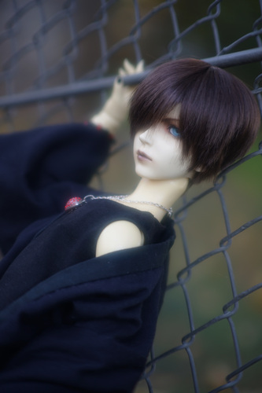 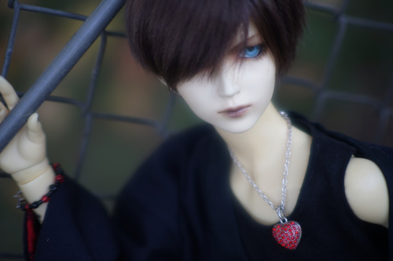 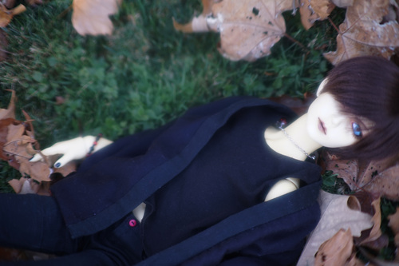
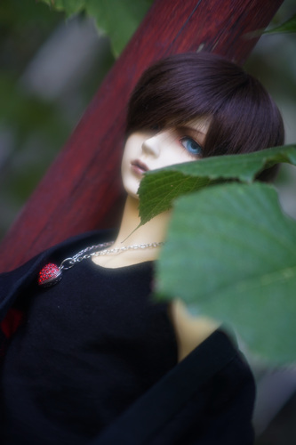
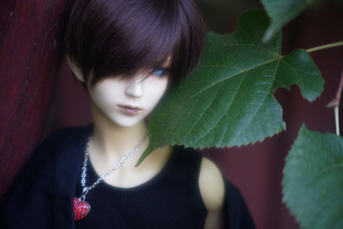
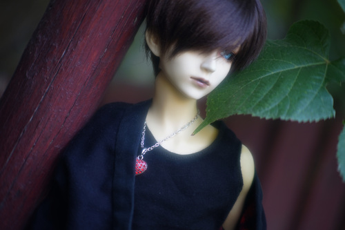
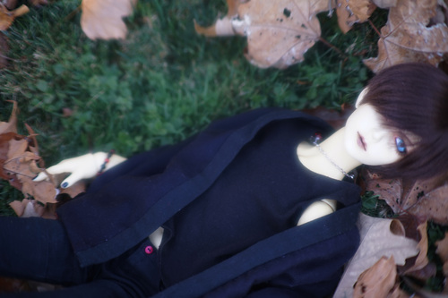
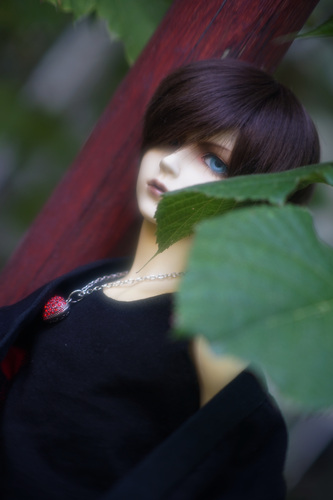
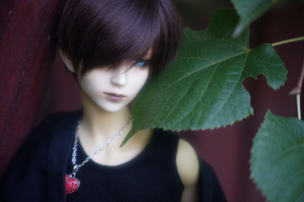
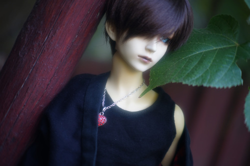
Second is Riamu, who arrived on my doorstep 14 years ago today~
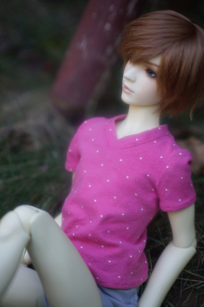 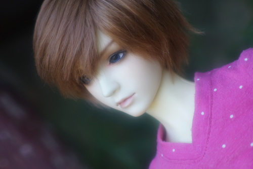 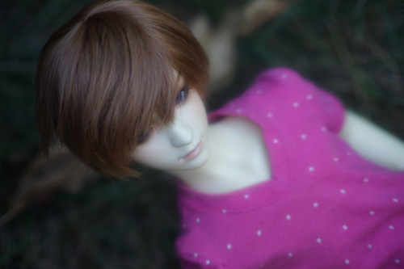 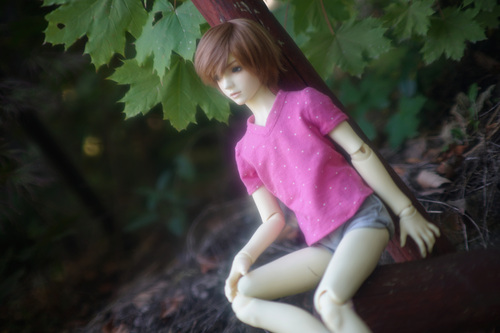 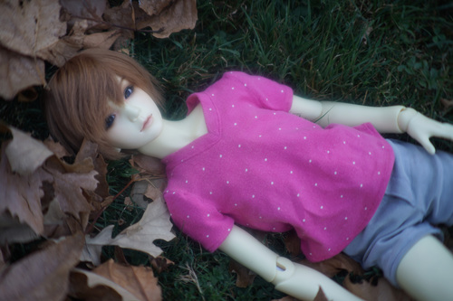 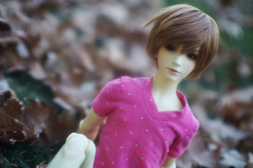
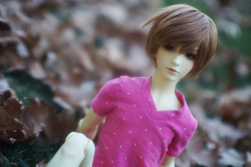
And a few together! I love how they are oppsites in every way.
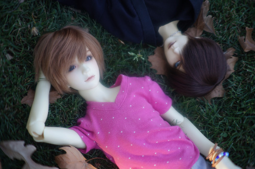 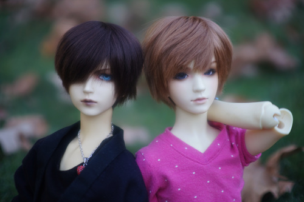 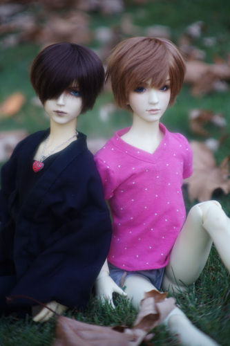
I used the Canon FD 50mm f/1.4 with the Vivitar 2x teleconverter for all of these. The teleconverter adds a ton of glow, which I have removed a lot of. I also found I couldn't get anything close to a sharp focus if I was further away. It's an interesting addition to my collection! I like playing with it.

I spent well over a week tweaking Volta's new pants pattern that I started before moving in July. 7 mock ups later, I finally came up with one that is good enough. Thank Mana-sama because it was getting a little embarrassing to have a naked boy in my room.

I decided to take a shortcut patterning/cutting that caused me to have to rip the thing apart and reorganize my thoughts again. They're done now except that I can't decide on the closure for them. I don't like how the eye and hook is visible with them shut, but they might bust open a simple snap.
(nofoto)
Found at a yard sale. Another camera bought for the lens. RIP Matt Hann of Buffalo, SD
I knew I had a Frou Frou album, but I couldn't remember which and I didn't have this one. But they also only have one album! Turns out I already owned a compilation album and not this one.
No, I haven't seen the movie.
Why even list this without a photo??
brand new in package. I already have something similar to this, but it does not have an IDE power cable, so I can only use it with my case open and my power supply cables coming out